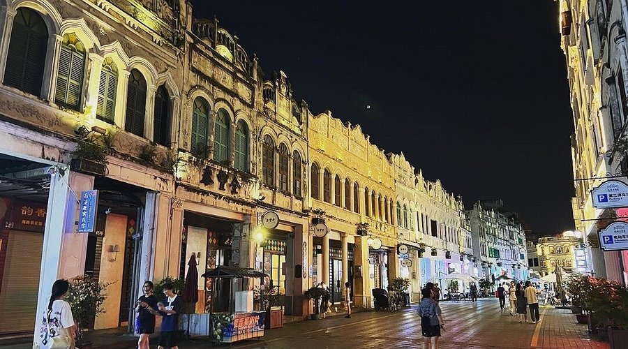

Top 3 Historic Sites in Haikou
Qilou Old Street (Arcade Street)

Introduction
Qilou Old Street, in Haikou’s old town, is a 1.4-kilometer-long street lined with 100+ “qilou” buildings—colonial-style arcade structures built in the late 19th to early 20th centuries (a mix of Chinese, French, and Southeast Asian architecture). The buildings have ground-floor arcades (to shelter pedestrians from sun and rain) and upper floors with colorful facades and wooden balconies. Once a busy maritime trade hub (merchants sold spices, silk, and seafood here), today the street is filled with local shops (selling coconut candy, Hainanese tea), street food stalls, and small museums (e.g., the “Haikou Qilou Culture Museum”). Walk along the street to admire the well-preserved buildings, taste Hainanese snacks, and snap photos of the vintage signs.
Best Time to Visit
Evening (6:00 PM–8:00 PM): Street lights turn on; stalls open for dinner; lively but not crowded.
Winter (November–February): Cool weather for walking.
Price
Entry Fee: Free (the street is open to the public).
Qilou Culture Museum: 15 CNY/adult; 8 CNY/students.
Street Food: 5–15 CNY/snack (e.g., coconut rice, grilled squid).
Haikou Museum (Former Imperial Examination Hall)

Introduction
Haikou Museum is housed in the “Haikou Imperial Examination Hall”—a Qing Dynasty (1636–1912) building that once served as a venue for imperial exams (tests for scholars to enter government service). The museum covers 1,500 square meters and has two main sections: the “Imperial Examination Exhibition” (with ancient exam papers, inkstones, and scholar robes) and the “Haikou History Exhibition” (with artifacts from Haikou’s maritime trade, including old porcelain and navigation tools). The building itself is a historic treasure: it has traditional Chinese courtyards, wooden halls with carved beams, and a “Wenchang Pavilion” (a small tower symbolizing literacy). It’s a quiet spot to learn about Haikou’s educational and cultural history.
Best Time to Visit
Morning (10:00 AM–11:30 AM): Quiet; good for reading exhibition labels.
Year-round: Indoor (22°C–25°C), comfortable in all seasons.
Price
Entry Fee: 20 CNY/adult; 10 CNY/students; free for kids under 1.2m.
Audio Guide: 15 CNY/rental (available in English and Chinese).
Xiuying Fort
Introduction
Xiuying Fort, on Haikou’s western coast, is a Ming Dynasty (1368–1644) military fortress built to defend Hainan’s coast against pirates and foreign invaders. The fortress covers 10,000 square meters and includes three main parts: the “Fortress Wall” (a 2-meter-thick stone wall that circles the site), the “Cannon Platform” (where 10+ ancient bronze cannons are displayed), and the “Command Post” (a small building where military leaders planned defenses). The fort played an important role in Haikou’s history—during the Opium Wars (19th century), it was used to resist British warships. Today, you can climb the fortress wall for views of Haikou Bay, touch the ancient cannons, and read signs about the fort’s military history.
Best Time to Visit
Afternoon (2:00 PM–4:00 PM): Good light for photos of the cannons and sea views.
Winter (December–January): Cool breeze from the sea.
Price
Entry Fee: 15 CNY/adult; 8 CNY/students; free for kids under 1.2m.
Guided Tour (1 hour): 40 CNY/group (includes stories about the fort’s battles).